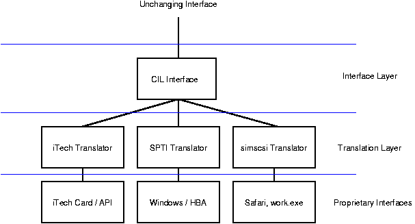

Niagara / CIL Training - Motivation
What Is The CIL?
CIL is an acronym for "Common Interface Layer". The CIL is a drive
testing system based on fundamental software engineering concepts of layering
and abstraction. These ideas allow tools and test scripts that are
written for the CIL to adapt to a changing testing environment without
having to be rewritten.
How Does The CIL Work?
The CIL breaks the concept of a testing support system into 2 distinct
layers: the interface layer and the translation layer. The interface
layer represents an unchanging method for access underlying devices.
The translation layer translates this method into the proper method
for the specific device.

How Does The CIL Support New Features?
The CIL has been carefully designed, not only to support new features,
but to do so:
-
Without requiring existing CIL applications to be recompiled
-
Without requiring the CIL interface to be recompiled
-
Without requiring any existing drivers to be recompiled*
How is this accomplished? Through the use of a UNIX concept known
as "ioctls". The use of ioctls allow new features to be added without
changing the functional specification of the interface. Translators
are designed to return "unsupported feature" at any unrecognized ioctl.
Therefore, the addition of new features does not break the existing system.
Now for the * part:
-
Existing drivers to have to be modified / recompiled to actually support
new features, but not to remain functional at their existing level.
This allows for targeted improvement to the system.
What Are The Benefits?
Historical Challenges
-
In our history, we have moved from one established system to another (comet,
FCL, iTech).
-
In each of these cases the switch initially caused a lot of pain and rewriting
of the same scripts.
-
In most of these cases, the original system eventually degraded to an unsupported
state, forcing us to leave behind excellent scripts / ideas.
-
In most of these cases, we are forced to adapt ourselves to the limitations
of the platforms features. Lack of portability, lack of interface
support, missing features, and expensive hardware were all problems we
were required to endure.
The Layered Approach
-
Once a script is written to the CIL, events such as vendors exiting the
tester business or not supporting the latest interfaces turns from a large
problem to a small one. Instead of being forced to rewrite all of
our established test cases / utilities to a new proprietary system, we
simply need to create a translator for whatever solution we find.
-
The scripts that are created with CIL also offer a lot more in terms of
flexibility:
-
ITech cards too slow for a particular test? Run the exact same test
on a fast HBA...
-
Want to test preproduction microcode with a simulator? Use the same scripts that are
used on real drives.
-
The CIL contains no platform specific code (i.e. Microsoft COM, or windowing
code)
-
Both a Windows and Linux version are kept at identical functional levels
-
Ports to other architectures (SUN, RS), are highly feasible
What Is Niagara?
The CIL is a drive testing interface written in C++. To talk to the CIL
layer directly, C++ programming is required. Niagara encapsulates the CIL
into a TCL based testing environment. This environment is Xyratex like in
that it allows interactive sessions with the drives and contains a complete infrastructure
that is specifically designed for drive testing. In certain cases it makes
the most sense to program to CIL directly in C++, but for most cases, results
can be achieved faster and with fewer lines of code using Niagara.
What Is TCL?
TCL stands for "Tool Command Language". This language was chosen
for the following reasons:
-
Support: There is a variety of support for TCL in the form
of web sites, published books, newsgroups, and language extensions
-
Maturity: TCL is now at version 8.3 and has been completely rewritten
since its first reincarnation with a modern "byte code" architecture
-
Other Vendors: Expensive, professional products such as Einstimer,
ModelSim and Seamless contain a TCL engine which they have used with good
success
Is The CIL Ready For Serious Use?
(2/15/2002)
For most applications, CIL is ready for prime time:
-
The basic interface has not changed for over 6 months
-
Many of the existing drivers (Linux, ASPI) have been stable for over 6
months
-
A good portion of FCL - ITech native code has been successfully ported
to the CIL
-
Niagara is beginning to become a staple tool for an expanding population
of individuals, and this training is intended to increase that even more!
In certain areas, however, the CIL is still in beta:
-
The iTech translator, although stable in most areas, is still being refined
in the area of command queuing. Command queuing is functional but
not yet fully supported
-
The simscsi translator is still in early Beta. In many areas the
driver has good functionality (and is being actively used to test code)
but more work needs to be done.
-
The Niagara GUI requires a few minor cleanups
The first two areas are high priority for the tools team as both
represent important testing capability. The third is a statement
of the quirkiness of user interaction with GUI systems, and is improving
weekly.